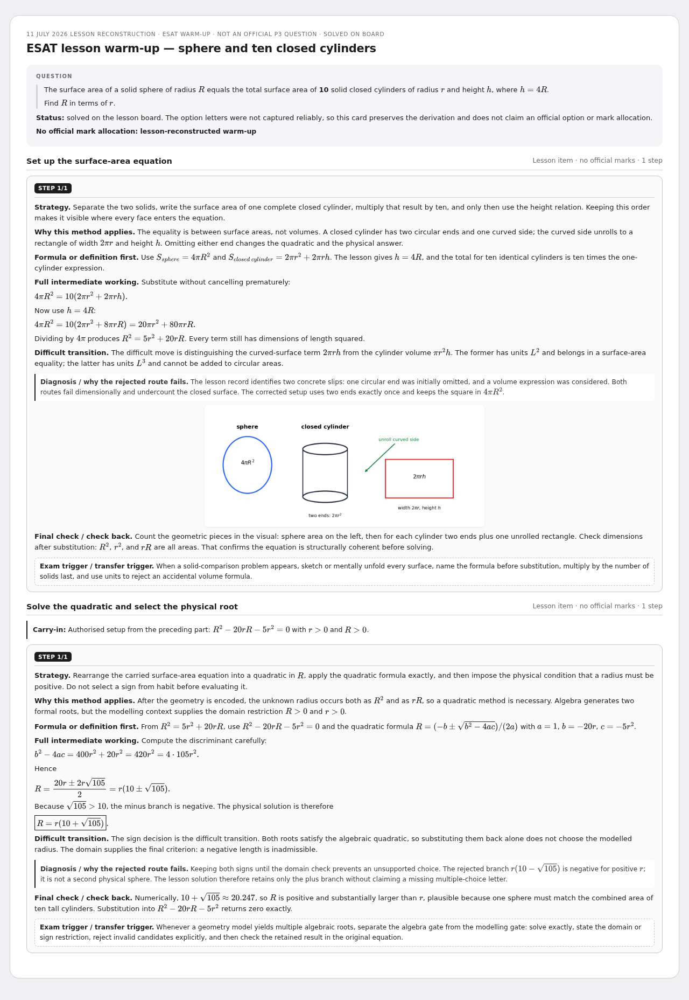
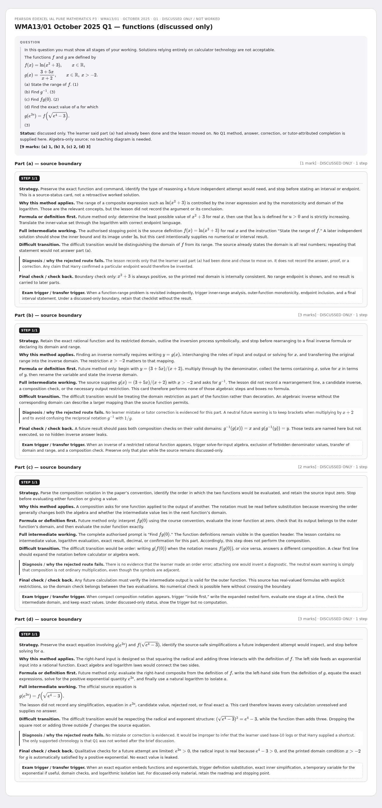
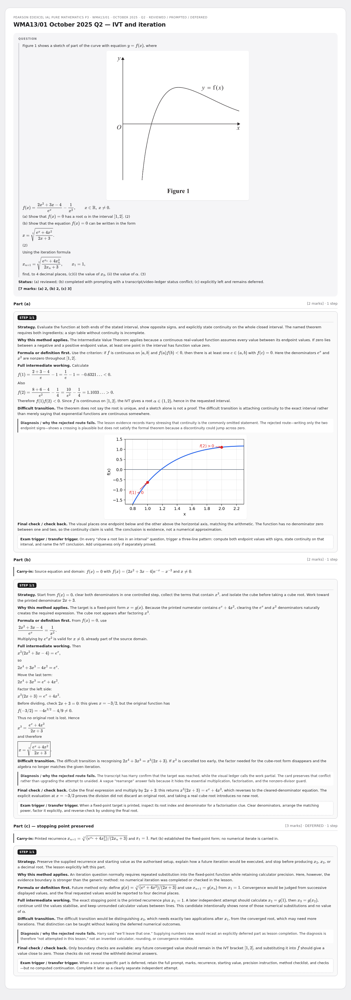
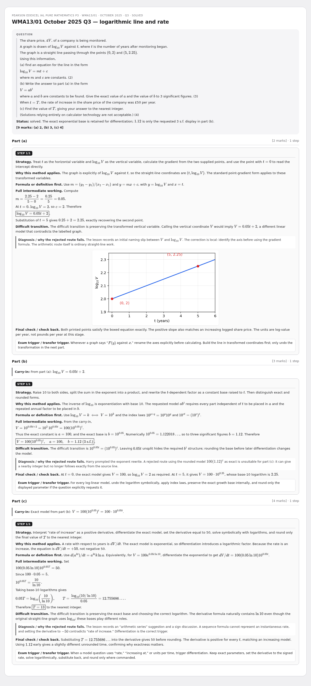
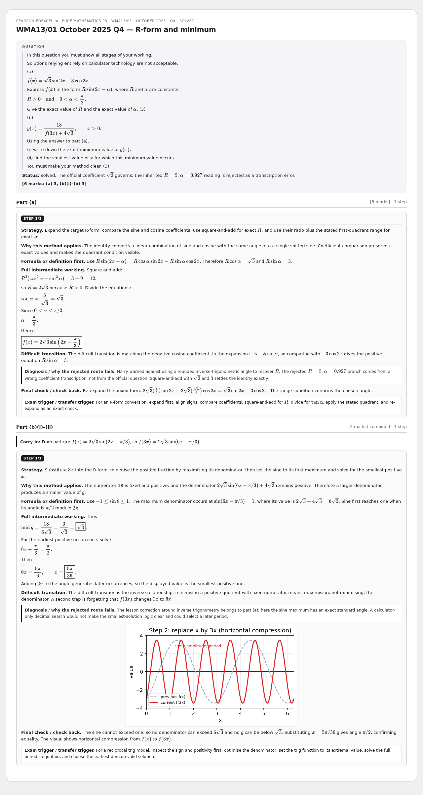
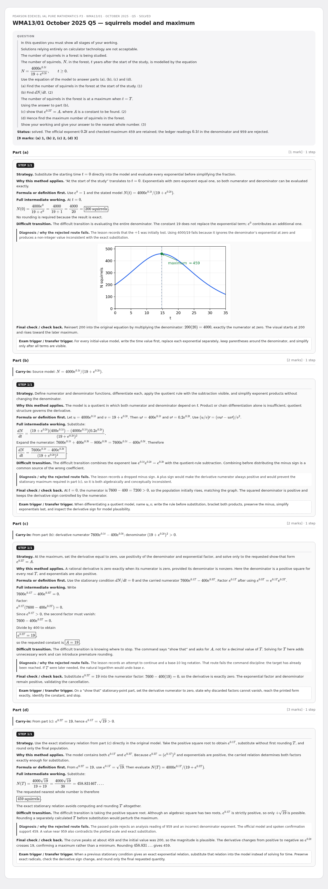

11 July P3 October 2025 + ESAT
Six source-bounded multi-step cards: one lesson-reconstructed ESAT warm-up and official WMA13/01 October 2025 Q1–Q5. Q1 is preserved as discussed-only and Q2(c) as deferred; neither gains an invented completion. Each substantive grey work step teaches strategy, formula, intermediate working, difficult transition, diagnosis, check and transfer.
6 cardsWMA13/01 Oct 2025ESAT lesson warm-up
ESAT lesson warm-up — sphere and ten closed cylinders

WMA13/01 October 2025 Q1 — functions (discussed only)

WMA13/01 October 2025 Q2 — IVT and iteration

WMA13/01 October 2025 Q3 — logarithmic line and rate

WMA13/01 October 2025 Q4 — R-form and minimum

WMA13/01 October 2025 Q5 — squirrels model and maximum
